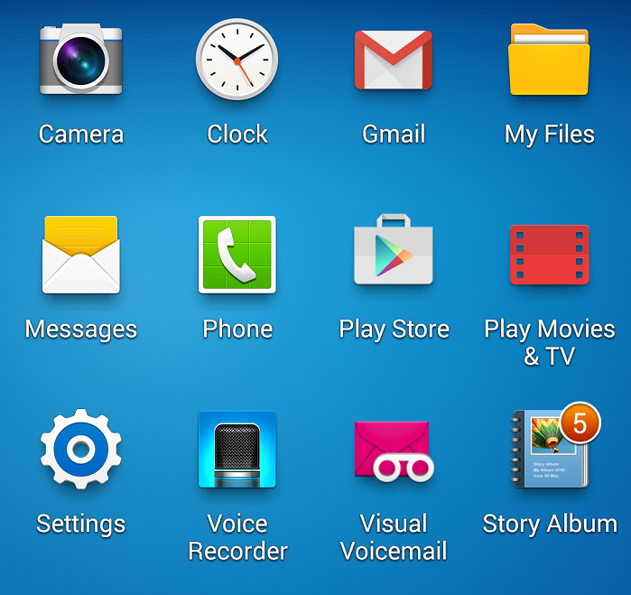

- Looks like gobbledegook to you? I’ll let you in on a little secret: It’s gobbledegook to most highly-competent software developers too.
- X years experience with Y: Good luck with that considering Y has only been around Z years. Might have well asked for experience wrangling unicorns. http://www.nextavenue.org/why-good-people-cant-get-jobs/
- Fun Fact: The “World Wide Web” and “Internet” are very different things.
- No one knows the Full Stack, we laugh at Want Ads that claim to require this.
Backwards history of Computer Science
A Screen Full of Metaphors
We are all familiar with the numerous icons representing our many installed softwares, but how often do we think about what these images represent? The paper folders for file locations, cogs and gears for settings, postal envelopes for electronic mail, moving picture film for video, old-fashioned phones, briefcases, and other symbols are all metaphors taken from our physical world to signify algorithms and information architectures that are, when taken in their entirety, incomprehensible in their complexity to the human mind.

I often wonder how these icons will be perceived generations from now, when the real-world things they represent
- Icons on your desktop. Metaphors (some growing outdated)
- Human-language code.
- Machine code.
- Transistors
- Moore's Law: the power of computers doubles every two years(?)

- The Loom: Ancient Weaving
- The Analytical Engine: Charles Babbage used punch cards to program mathematical operations. Ada Lovelace, daughter of the poet George, Lord Byron, wrote an algorithm to compute Bernoulli numbers which is considered the first computer program.
- Jacquard loom: used punch cards to program each line of thread in a pattern.
- Trip to Peru, ideograms
 Source
Source


{kind=link}